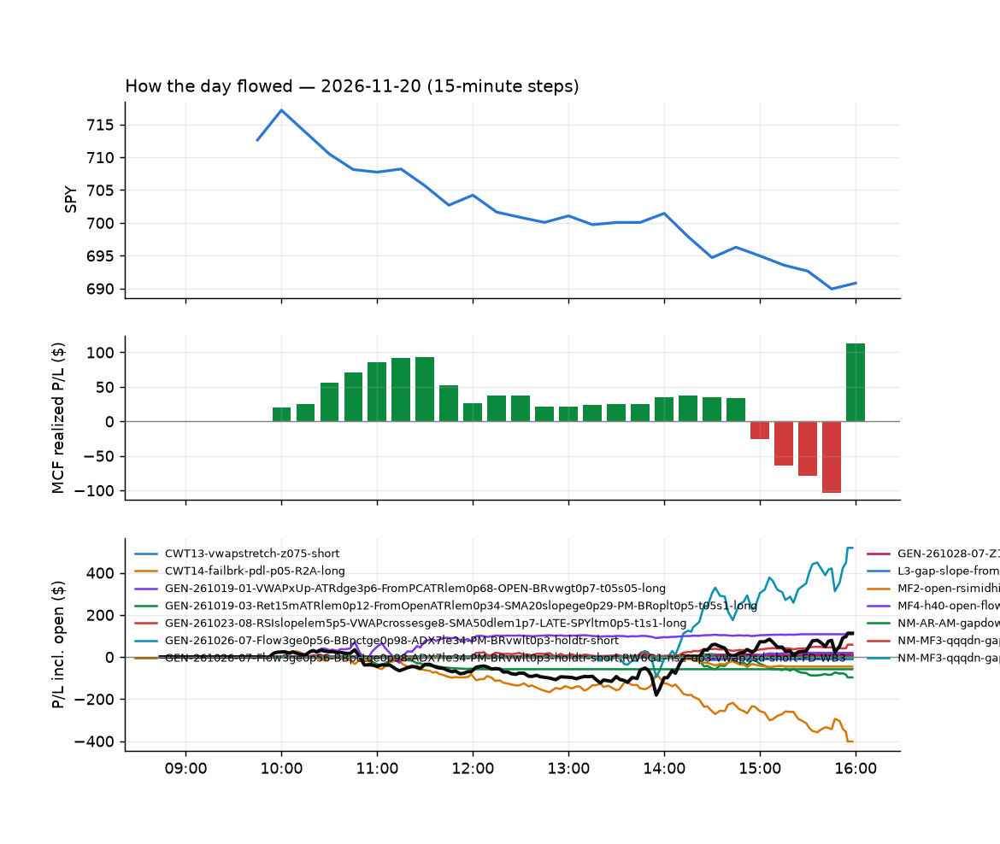
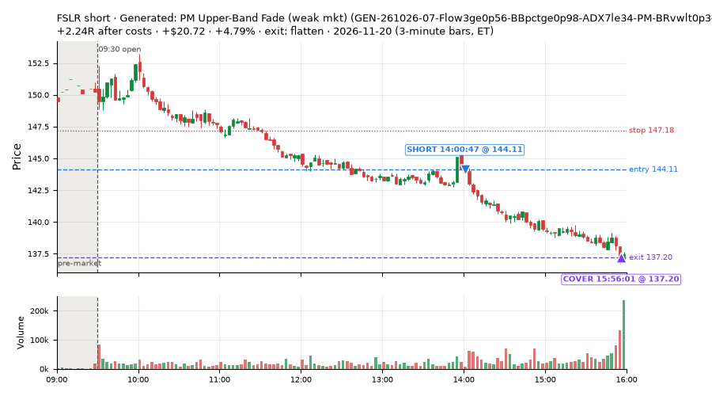
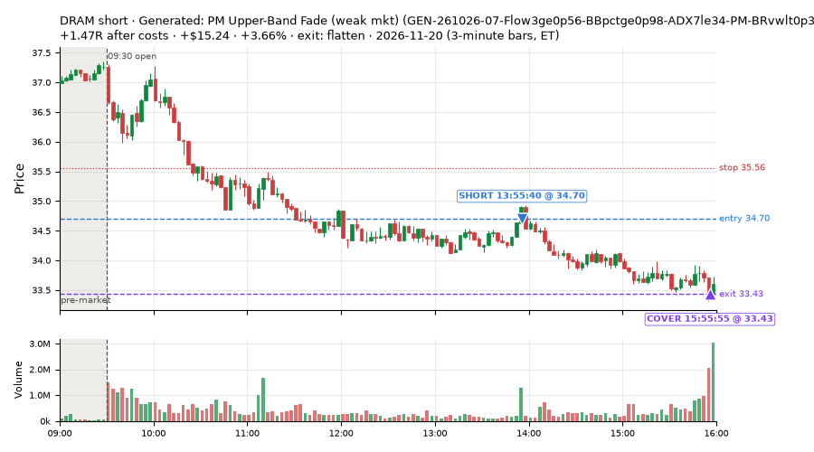
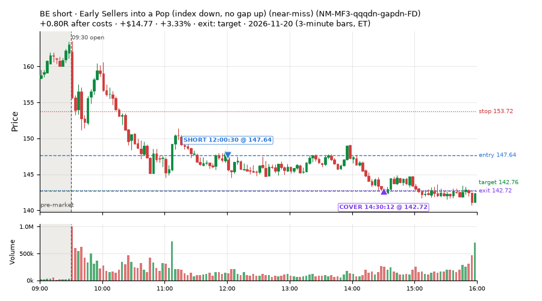
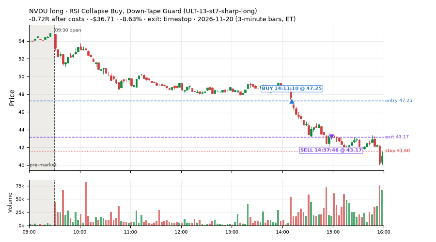
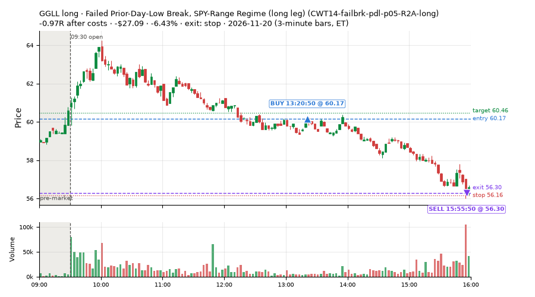
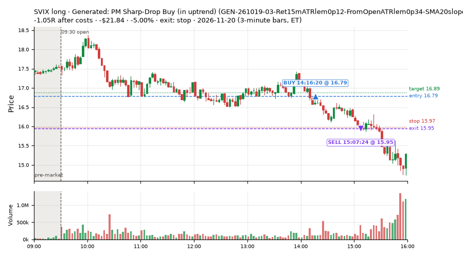
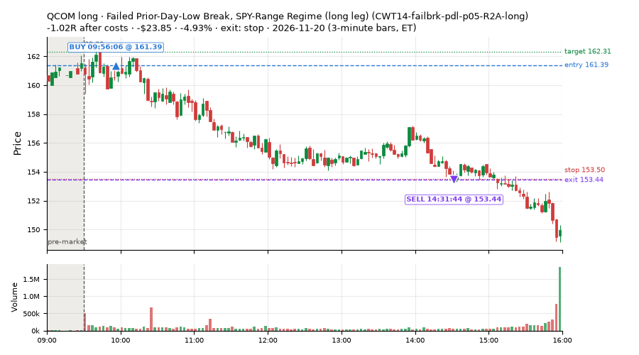

232 trades · win rate 65% · P/L $112.78
PROBATION: no live setup has passed both locked test periods. 10 owner-directed setups added 2026-10-08 (MarcoFlow top 5 + 5 new), untested live. RW6G1 (RW6 + VWAP band guard) added 2026-10-09, probation.

| Symbol | Setup | Side | In | Out | Entry | Exit | Exit reason | % gained | P/L |
|---|---|---|---|---|---|---|---|---|---|
| FSLR | Generated: PM Upper-Band Fade (weak mkt) (GEN-261026-07-Flow3ge0p56-BBpctge0p98-ADX7le34-PM-BRvwlt0p3-holdtr-short) | short | 14:00 | 15:56 | 144.11 | 137.20 | flatten | +4.79% | $20.72 |
| DRAM | Generated: PM Upper-Band Fade (weak mkt) (GEN-261026-07-Flow3ge0p56-BBpctge0p98-ADX7le34-PM-BRvwlt0p3-holdtr-short) | short | 13:55 | 15:55 | 34.70 | 33.43 | flatten | +3.66% | $15.24 |
| BE | Early Sellers into a Pop (index down, no gap up) (near-miss) (NM-MF3-qqqdn-gapdn-FD) | short | 12:00 | 14:30 | 147.64 | 142.72 | target | +3.33% | $14.77 |
| Symbol | Setup | Side | In | Out | Entry | Exit | Exit reason | % lost | P/L |
|---|---|---|---|---|---|---|---|---|---|
| SOXL | GEN-261019-03-Ret15mATRlem0p12-FromOpenATRlem0p34-SMA20slopege0p29-PM-BRoplt0p5-t05s1-long | long | 14:16 | 15:55 | 33.33 | 30.16 | stop | -9.51% | $-41.21 |
| NVDU | ULT-13-st7-sharp-long | long | 14:11 | 14:57 | 47.25 | 43.17 | timestop | -8.63% | $-36.71 |
| GGLL | CWT14-failbrk-pdl-p05-R2A-long | long | 13:20 | 15:55 | 60.17 | 56.30 | stop | -6.43% | $-27.09 |
| SVIX | GEN-261019-03-Ret15mATRlem0p12-FromOpenATRlem0p34-SMA20slopege0p29-PM-BRoplt0p5-t05s1-long | long | 14:16 | 15:07 | 16.79 | 15.95 | stop | -5.00% | $-21.84 |
| QCOM | CWT14-failbrk-pdl-p05-R2A-long | long | 09:56 | 14:31 | 161.39 | 153.44 | stop | -4.93% | $-23.85 |







Signal to fill: median 1s, 90th percentile 3s (232 trades). Bars close each minute; the order follows the bar close.
Best excursion (MFE): median 0.30R; worst (MAE) median 0.36R. 44% of trades never got +0.25R in our favour; 1 reached +1R and still closed at or below 0.
| Symbol | Setup | Best R | Worst R | Closed R |
|---|---|---|---|---|
| IFF | GEN-261026-07-Flow3ge0p56-BBpctge0p98-ADX7le34-PM-BRvwlt0p3-holdtr-short | +0.46 | -1.00 | -1.10 |
| SDS | CWT13-vwapstretch-z075-short | +0.39 | -1.03 | -1.08 |
| SQQQ | CWT13-vwapstretch-z075-short | +0.37 | -1.15 | -1.08 |
| USO | GEN-261026-07-Flow3ge0p56-BBpctge0p98-ADX7le34-PM-BRvwlt0p3-holdtr-short | +0.40 | -1.01 | -1.05 |
| SOLS | NM-AR-AM-gapdown-capitulation-long | +0.32 | -1.06 | -1.12 |
| Entry time | Trades | Win | Avg R | P/L |
|---|---|---|---|---|
| 09:50-10:30 | 35 | 71% | -0.06 | $-22.15 |
| 10:30-11:30 | 48 | 50% | -0.30 | $-137.49 |
| 11:30-13:00 | 17 | 47% | +0.03 | $-17.76 |
| 13:00-14:00 | 82 | 87% | +1.05 | $406.27 |
| 14:00-16:00 | 50 | 46% | -0.05 | $-116.09 |
| Setup | Trades | Win | Avg R after costs | Adj R (net of SPY) | Avg R ex-market (all sessions) | P/L |
|---|---|---|---|---|---|---|
| Stretched Above VWAP Fade (far) (CWT13-vwapstretch-z075-short) | 2.0 | 0% | -1.08 | -1.45 | -0.11 (beta +0.66, n 30) | $-9.36 |
| Failed Prior-Day-Low Break, SPY-Range Regime (long leg) (CWT14-failbrk-pdl-p05-R2A-long) | 67.0 | 37% | -0.38 | +0.02 | -0.04 (beta +0.33, n 433) | $-401.67 |
| Generated: Open VWAP Reclaim Buy (down stock) (GEN-261019-01-VWAPxUp-ATRdge3p6-FromPCATRlem0p68-OPEN-BRvwgt0p7-t05s05-long) | 1.0 | 0% | -1.05 | -0.70 | -1.18 (beta -0.26, n 6) | $-3.88 |
| Generated: PM Sharp-Drop Buy (in uptrend) (GEN-261019-03-Ret15mATRlem0p12-FromOpenATRlem0p34-SMA20slopege0p29-PM-BRoplt0p5-t05s1-long) | 10.0 | 30% | -0.55 | -0.24 | +0.17 (beta +0.80, n 10) | $-97.11 |
| Generated: Late Choppy Dip Buy (SPY down) (GEN-261023-08-RSIslopelem5p5-VWAPcrossesge8-SMA50dlem1p7-LATE-SPYltm0p5-t1s1-long) | 3.0 | 67% | +0.16 | +0.53 | -0.23 (beta -0.07, n 17) | $3.20 |
| Generated: PM Upper-Band Fade (weak mkt) (GEN-261026-07-Flow3ge0p56-BBpctge0p98-ADX7le34-PM-BRvwlt0p3-holdtr-short) | 79.0 | 91% | +1.19 | -0.60 | -0.23 (beta -0.82, n 163) | $518.62 |
| Generated: Midday Spike Fade (SPY down) (GEN-261028-07-Z12ge1p6-Eff6le0p034-MID-SPYltm0p25-hold-short) | 2.0 | 100% | +1.64 | -0.91 | -0.31 (beta -0.71, n 18) | $17.60 |
| Gap-Down Recovery Fade — WB4: earlier cut-off, deeper gap, 75-min hold (L3-gap-slope-fromopen-FD-WB4) | 3.0 | 33% | -0.15 | -0.19 | -0.01 (beta +1.59, n 27) | $-3.72 |
| Early Sellers, Mid-High RSI (all day) — WB3: skip rising 20-SMA / gap-ups > 2% + RSI 55-62 + heat -40..-30 + ADV $150M (MF2-open-rsimidhi-flowsell-FD-WB3) | 1.0 | 100% | +1.27 | -0.84 | -0.73 (beta -1.47, n 28) | $4.72 |
| Early Sellers, Strong Heat (MF4-h40-open-flowsell) owner-directed; holdouts once: Sep-Oct -0.117R n147, Apr-Jun -0.017R n735 | 28.0 | 96% | +0.23 | -0.05 | -0.11 (beta -0.37, n 50) | $108.11 |
| Gap-Down Capitulation Buy (near-miss) (NM-AR-AM-gapdown-capitulation-long) | 8.0 | 0% | -1.08 | -0.65 | -0.30 (beta +0.85, n 85) | $-58.28 |
| Early Sellers into a Pop (index down, no gap up) (near-miss) (NM-MF3-qqqdn-gapdn-FD) | 8.0 | 100% | +0.64 | -0.19 | -0.06 (beta -0.47, n 68) | $58.33 |
| Big Loser VWAP Reclaim Fade, Morning, Wide Stop (NS3V1-am-widestop-short) | 1.0 | 100% | +0.50 | -0.56 | -0.19 (beta -0.24, n 87) | $4.68 |
| Big Gainer Fade, VWAP Band Guard (all day) — WB3: from 11:00, stretched reclaim, liquid, no gap-up runners (RW6G1-ns2-up3-vwap2sd-short-FD-WB3) | 1.0 | 100% | +1.21 | -0.54 | – | $8.46 |
| Afternoon Volatile Dip Buy (broad) (ULT-07-pm-volatile-dip-long) | 4.0 | 25% | -0.22 | +0.14 | – | $-10.63 |
| RSI Collapse Buy, Down-Tape Guard (ULT-13-st7-sharp-long) | 6.0 | 0% | -0.25 | -0.23 | -0.14 (beta +0.87, n 6) | $-45.68 |
| Late-Day ETF Pop Fade (WB4 mirror) (ULT-HV1-etf-late-pop-fade-short-X) | 8.0 | 88% | +0.11 | +0.01 | +0.62 (beta +2.78, n 8) | $19.39 |
Market direction (SPY, beta 1) accounted for $400.92 of today's $112.78; the rest ($-288.14) came from the setups themselves. Avg R net of SPY: -0.28 (incl. a hedge leg's cost; report only).
23 setups live today. Today: 444 signals, 232 taken, 9 lost because another setup held the symbol (2%). Since 2026-10-12 (30 sessions): 13114 signals, 6567 taken, 818 lost to other setups (6%). Peak open positions today 140 of 800 slots. Earnings blackout removed 181 symbols before scanning.
Simulated playing time (not live): 6525 what-if trades of signals not taken, avg -0.07R, 58% winners; of them 818 lost to another setup (avg -0.17R).
Silent: GEN-261020-08-FlowShiftlem0p41-Compress6le0p077-OPEN-QQQup-t05s05-long, GEN-261029-04-Ret15mge0p54-RVolDayle0p59-VWAPcrossesle1-LUNCH-SPYgt0p25-hold-long, GEN-261026-01-UpWickge0p59-Since950ATRlem0p61-AM-BRopgt0p5-holdtr-short, LD4-st4-breadthup-t1s05-long, GEN-261028-01-MACDhge0p12-Since950ATRlem0p25-LATE-SPYgt0p5-holdtr-long, LD8-spy-dip030-breadthturn-spxl-holdtr-long, GEN-261027-10-FlowShiftlem1p2-MACDhge0p079-SMA20dge0p59-LUNCH-BRopgt0p65-holdtr-long, LD1-ns1-breadthup-t05s1-long, CWT04-backside-lh-a25-short, CWT04-backside-vwaptest-a25-short · Crowded out: NS3-failed-vwap-reclaim-short-FD · Starved: exhaustion_short-FD, MF5-flowsell-vwapup-rsi5hi, NS5-sma50-flush-oversold-long-FD, RW4-ns3-adv150-short-FD, MF2-open-rsimidhi-flowsell
| Prio | Setup | Today sig / taken | Sessions | Signals / taken / trades | Taken/day | Expected/day | Lost to other setups | Lost to (setup n) | Top skip reasons | SIMULATED: not-taken n / avg R / win | Verdict |
|---|---|---|---|---|---|---|---|---|---|---|---|
| 1 | Gap-Down Recovery Fade — WB4: earlier cut-off, deeper gap, 75-min hold L3-gap-slope-fromopen-FD-WB4 | 18 / 3 | 4 | 217 / 27 / 27 | 6.75 | – | 7 | L3-gap-slope-fromopen-FD-WB4 7 | not shortable / shorts off 161, spread / quote / size 21, symbol held by another setup 7 | 189 / +0.05R / 53% | ok 33.8 entries/week |
| 2 | Early Sellers, Mid-High RSI (all day) — WB3: skip rising 20-SMA / gap-ups > 2% + RSI 55-62 + heat -40..-30 + ADV $150M MF2-open-rsimidhi-flowsell-FD-WB3 | 5 / 1 | 4 | 54 / 28 / 28 | 7.00 | – | 2 | CWT14-failbrk-pdl-p05-R2A-long 2, CWT14-failbrk-pdl-p10-long 2 | spread / quote / size 10, other 10, symbol held by another setup 2 | 26 / -0.17R / 38% | ok 35.0 entries/week |
| 3 | Big Gainer Fade, VWAP Band Guard (all day) — WB3: from 11:00, stretched reclaim, liquid, no gap-up runners RW6G1-ns2-up3-vwap2sd-short-FD-WB3 | 1 / 1 | 4 | 10 / 1 / 1 | 0.25 | – | 0 | – | not shortable / shorts off 9 | 9 / +0.70R / 89% | slow 1.2 entries/week; ~48 weeks to 60 trades |
| 4 | Generated: Midday Spike Fade (SPY down) GEN-261028-07-Z12ge1p6-Eff6le0p034-MID-SPYltm0p25-hold-short | 3 / 2 | 5 | 29 / 18 / 18 | 3.60 | – | 0 | – | spread / quote / size 8, other 3 | 11 / +0.31R / 64% | ok 18.0 entries/week |
| 5 | Generated: Late Choppy Dip Buy (SPY down) GEN-261023-08-RSIslopelem5p5-VWAPcrossesge8-SMA50dlem1p7-LATE-SPYltm0p5-t1s1-long | 10 / 3 | 5 | 32 / 17 / 17 | 3.40 | – | 0 | – | spread / quote / size 7, other 6, price through stop/target 2 | 15 / -0.28R / 20% | ok 17.0 entries/week |
| 6 | Generated: PM Upper-Band Fade (weak mkt) GEN-261026-07-Flow3ge0p56-BBpctge0p98-ADX7le34-PM-BRvwlt0p3-holdtr-short | 133 / 79 | 5 | 297 / 163 / 163 | 32.60 | – | 8 | CWT14-failbrk-pdl-p05-R2A-long 4, CWT14-failbrk-pdl-p10-long 3, NM-AR-AM-gapdown-capitulation-long 1 | other 47, spread / quote / size 29, per-setup cap 26 | 134 / +0.23R / 62% | ok 163.0 entries/week |
| 7 | Generated: Open Failed-Breakdown Short GEN-261026-04-ORBfailDn-Ret15mlem0p55-SMA50dlem0p3-OPEN-BRvwgt0p5-holdtr-short | 1 / 0 | 5 | 15 / 9 / 9 | 1.80 | – | 0 | – | spread / quote / size 4, not shortable / shorts off 2 | 6 / -0.94R / 0% | slow 9.0 entries/week; ~7 weeks to 60 trades |
| 8 | Generated: Open Tight-Range Sell-Off Buy GEN-261020-08-FlowShiftlem0p41-Compress6le0p077-OPEN-QQQup-t05s05-long | 0 / 0 | 5 | 0 / 0 / 0 | 0.00 | – | 0 | – | – | 0 / – | silent no signals in 5 session(s); no expected rate on file |
| 9 | Generated: Lunch Quiet Breakout Buy (SPY up) GEN-261029-04-Ret15mge0p54-RVolDayle0p59-VWAPcrossesle1-LUNCH-SPYgt0p25-hold-long | 0 / 0 | 5 | 0 / 0 / 0 | 0.00 | – | 0 | – | – | 0 / – | silent no signals in 5 session(s); no expected rate on file |
| 10 | Generated: Open VWAP Reclaim Buy (down stock) GEN-261019-01-VWAPxUp-ATRdge3p6-FromPCATRlem0p68-OPEN-BRvwgt0p7-t05s05-long | 5 / 1 | 5 | 22 / 6 / 6 | 1.20 | – | 0 | – | other 10, spread / quote / size 6 | 16 / -1.14R / 0% | slow 6.0 entries/week; ~10 weeks to 60 trades |
| 11 | Failed Prior-Day-Low Break, SPY-Range Regime (long leg) CWT14-failbrk-pdl-p05-R2A-long | 108 / 67 | 15 | 712 / 433 / 433 | 28.87 | – | 9 | RW3S-gapdn-flowsell-short-FD 6, MF4-h40-open-flowsell 1, GEN-261026-07-Flow3ge0p56-BBpctge0p98-ADX7le34-PM-BRvwlt0p3-holdtr-short 1 | spread / quote / size 269, symbol held by another setup 9, broker rejected 1 | 277 / -0.09R / 61% | ok 144.3 entries/week |
| 12 | Failed Prior-Day-Low Break, SPY-Range Regime (short leg) CWT14-failbrk-pdl-p05-R2A-short | 0 / 0 | 15 | 523 / 267 / 267 | 17.80 | – | 69 | CWT14-failbrk-pdl-p10-long 68, CWT14-failbrk-pdl-p10-lowvol-long 8, L3-gap-slope-fromopen-FD-WB4 1 | spread / quote / size 171, symbol held by another setup 69, not shortable / shorts off 16 | 254 / +0.03R / 72% | ok 89.0 entries/week |
| 13 | Generated: Morning Upper-Wick Short (falling) GEN-261026-01-UpWickge0p59-Since950ATRlem0p61-AM-BRopgt0p5-holdtr-short | 0 / 0 | 5 | 0 / 0 / 0 | 0.00 | – | 0 | – | – | 0 / – | silent no signals in 5 session(s); no expected rate on file |
| 14 | Generated: Lunch Choppy RSI Turn Buy GEN-261023-07-RSIslopege9p1-BarRngATRge0p087-VWAPcrossesge8-LUNCH-BRvwgt0p7-hold-long | 0 / 0 | 5 | 57 / 33 / 33 | 6.60 | – | 3 | NS3V1-am-widestop-short 2, exhaustion_short-FD 1 | other 15, spread / quote / size 6, symbol held by another setup 3 | 24 / -0.62R / 12% | ok 33.0 entries/week |
| 15 | Stretched Above VWAP Fade (far) CWT13-vwapstretch-z075-short | 8 / 2 | 30 | 57 / 30 / 30 | 1.00 | – | 0 | – | not shortable / shorts off 16, daily loss cap 4, spread / quote / size 3 | 27 / -0.64R / 22% | slow 5.0 entries/week; ~12 weeks to 60 trades |
| 16 | Early Sellers into a Pop (index down, no gap up) (near-miss) NM-MF3-qqqdn-gapdn-FD | 21 / 8 | 23 | 131 / 68 / 68 | 2.96 | 4.90 | 5 | NM-AR-AM-gapdown-capitulation-long 5, CWT13-vwapstretch-z05-long 1 | spread / quote / size 31, other 14, not shortable / shorts off 13 | 63 / +0.26R / 64% | slow 14.8 entries/week; ~4 weeks to 60 trades |
| 17 | Early Sellers, Strong Heat MF4-h40-open-flowsell | 73 / 28 | 8 | 145 / 50 / 50 | 6.25 | 7.24 | 2 | CWT14-failbrk-pdl-p05-R2A-long 1, NM-AR-AM-gapdown-capitulation-long 1 | spread / quote / size 71, not shortable / shorts off 12, other 10 | 95 / +0.07R / 73% | ok 31.2 entries/week |
| 18 | Big Loser VWAP Reclaim Fade, Morning, Wide Stop NS3V1-am-widestop-short | 1 / 1 | 21 | 191 / 87 / 87 | 4.14 | 5.30 | 4 | NS3V1-am-widestop-short 4, NM-RWR3-ns3-qqqup-early-short 1, NM-RWN3-ns3-spyup-early-short 1 | spread / quote / size 60, not shortable / shorts off 40, symbol held by another setup 4 | 104 / +0.06R / 64% | ok 20.7 entries/week |
| 19 | Gap-Down Capitulation Buy (near-miss) NM-AR-AM-gapdown-capitulation-long | 11 / 8 | 25 | 137 / 85 / 85 | 3.40 | – | 3 | MF4-h40-open-flowsell 2, CWT14-failbrk-pdl-p05-R2A-short 1 | spread / quote / size 42, other 7, symbol held by another setup 3 | 52 / -0.19R / 42% | ok 17.0 entries/week |
| 20 | RSI Collapse Buy, Down-Tape Guard ULT-13-st7-sharp-long | 9 / 6 | 1 | 9 / 6 / 6 | 6.00 | – | 1 | GEN-261026-07-Flow3ge0p56-BBpctge0p98-ADX7le34-PM-BRvwlt0p3-holdtr-short 1 | spread / quote / size 2, symbol held by another setup 1 | 3 / -0.53R / 0% | ok 30.0 entries/week |
| 21 | Late-Day ETF Pop Fade (WB4 mirror) ULT-HV1-etf-late-pop-fade-short-X | 14 / 8 | 1 | 14 / 8 / 8 | 8.00 | – | 1 | GEN-261019-03-Ret15mATRlem0p12-FromOpenATRlem0p34-SMA20slopege0p29-PM-BRoplt0p5-t05s1-long 1 | not shortable / shorts off 5, symbol held by another setup 1 | 6 / -0.55R / 33% | ok 40.0 entries/week |
| 22 | Afternoon Volatile Dip Buy (broad) ULT-07-pm-volatile-dip-long | 4 / 4 | 1 | 4 / 4 / 4 | 4.00 | – | 0 | – | – | 0 / – | ok 20.0 entries/week |
| 23 | Generated: PM Sharp-Drop Buy (in uptrend) GEN-261019-03-Ret15mATRlem0p12-FromOpenATRlem0p34-SMA20slopege0p29-PM-BRoplt0p5-t05s1-long | 19 / 10 | 1 | 19 / 10 / 10 | 10.00 | – | 2 | GEN-261026-07-Flow3ge0p56-BBpctge0p98-ADX7le34-PM-BRvwlt0p3-holdtr-short 2 | spread / quote / size 6, symbol held by another setup 2, other 1 | 9 / -0.43R / 22% | ok 50.0 entries/week |
Every trade is attached as a CSV you can open and edit in Excel or Google Sheets. Live page: https://misiti15.github.io/MCF/live/